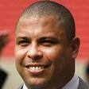

|  | Ronaldo |
| Gender | Male |
| Ethnic | Brazilian |
| Job | Brazilian Footballer |
| Desc | The scariest thing about Ronaldo? We arguably didn’t see him reach his full potential, as knee injuries stopped him in his tracks on two separate occasions. It’s scary to envisage what the former Barcelona, Inter and Real Madrid man could have achieved had he stayed in peak physical condition for the majority of his career. He was the perfect embodiment of what you would want from a striker and, as his eight goal tally at the 2002 World Cup proved, no one could rival him when he was in the mood |
Affiliation
| Owner | Real Valladolid |
| Club as Player | Real Madrid |
| Inter Milan | |
| Barcelona |
Relationship
| Agent | Giovanni Branchini |
- 1998 07 12
- World Cup 1998 final where France defeat Brazil 3-0. Zinedine Zidane score 2 goals with assist from Emmanuel Petit and Youri Djorkaeff. also final goal came from Emmanuel Petit with assist by Patrick Vieira
2010 09 07 Retrieve
[Ronaldo’s finest got nabbed for bringing three transvestite prostitutes back to his hotel room after dropping his girlfriend home first] Ronaldo admits the facts. He said he just wanted to amuse himself, that’s not a crime but this will stain my life forever
2011 03 18 Retrieve
[Brazil Legend Ronaldo Hails Fantastic Opposing Fans Ahead Of Friendly Against Scotland] One of my favourite footballing memories is of the opening game of the 1998 World Cup in Paris against Scotland and the fantastic Scottish fans, so I am very excited to be experiencing a Scotland-Brazil match once again
2014 03 01 Retrieve
[Ronaldo on Zinedine Zidane’s next career move] I believe Zidane is preparing to train France. He won’t spend much time as the number two at Real Madrid. With all of his experience, he can train any team
2015 01 24 Retrieve
[Brazil legend Ronaldo names his favourite striker] I think the best striker is Ibrahimovic. He wears No10, but he plays like a No9. Last year I went to Paris a couple of times and watched matches in which he played. His movement [is amazing]! He’s very, very good - the best at the moment
2016 10 22 Retrieve
[Former Real Madrid forward Ronaldo says he would like to see a certain Liverpool playmaker make the move to the Santiago Bernabeu] I would like to see Coutinho at Real Madrid, the Liverpool player
2017 01 11 Retrieve
[Former Brazil and Real Madrid superstar Ronaldo has responded in shock to Michael Owen’s jibe about his weight] I am shocked as to how much importance my weight garners in the world we live in. I don’t know why it is so important, to be honest.
2017 02 18 Retrieve
[Ronaldo has accused Barcelona of using dark arts in their negotiations] The experience [in Barcelona] was wonderful, but it was not possible to continue although that was not my fault. I had reached an agreement to renew my contract just a month before that season was over. But a week later, Barcelona’s lawyer and president agreed that the contract was absurd, so they would accept the offer of any club that would pay my 29 million euro release clause.
In Barcelona, even today, the club demonstrates these dark arts in their negotiations. They act in a different way, for instance with the ‘Neymar case’. I believe we still do not know what happened. There are many serious issues and someone is going to pay dearly for them
2017 02 25 Retrieve
[Ronaldo reveals the reason behind his famous haircut during the 2002 FIFA World Cup Final] My groin was hurting. I was only at 60 per cent. So I shaved my head. Everybody was only talking about my injury. When I arrived in training with this haircut everybody stopped talking about the injury
2017 04 29 Retrieve
[Ronaldo posts his support for Zlatan Ibrahimovic on Instagram] [You have] my positive thinking, so that you have a good recovery, and come back even stronger. The force is in our will! You have my support, respect and admiration for facing the injury with this warrior spirit of overcoming adversity
2017 08 12 Retrieve
[Ronaldo talks about his time being a part of the 1994 FIFA World Cup winning team as a 17-year-old] Let me put it this way. Harvard’s a pretty big deal in America, right? Well, playing with that team in that tournament was like going to the Ivy League of football. It was a first-class, front-row education on how to not just play football, but how to be a footballer. How to be a World Cup champion. I didn’t play a minute in that tournament, but I watched and absorbed everything that I could. I took notes, collected all this information, knowing that someday I was going to be back. That summer changed my life and my career
2018 01 04 Retrieve
[Messi and CR7 wouldn’t have had 10 Ballon d’Or wins in my day] In my generation, the competition was much bigger than it is now, without wanting to belittle Messi and Cristiano Ronaldo. They will fight for the title of the best player in the world in the coming years, but in my time we had [Zinedine] Zidane, Rivaldo, [Luis] Figo, me, and then Ronaldinho. That was a generation in which being the best was much more difficult.
I do not know what went behind his transfer, maybe there was a problem with the presidency of Barcelona, like what happened with me. Neymar’s departure from Barcelona has many parallels with what happened in 1997. I went to Inter when the Italian league was much stronger than the French league today
2018 01 04b Retrieve
[Former Brazil star Ronaldo says coach Tite has set a new standard for the Selecao] Brazil are strong again. With Tite in command of the Selecao, there is now a certain standard of play that the team maintains. They are now a compact team, working as a single unit and [the players] are highly motivated. The Selecao has regained their respect and are playing a great football again.
[On Neymar] Neymar is an excellent player, the face of Brazilian football and I do not think he feels all the pressure of expectation. There are some disciplinary problems, unnecessary yellow cards in the game, but he is still young
2018 01 12 Retrieve
[Neymar’s decision to swap La Liga giants Barcelona for Paris Saint-Germain was a step backwards] Sportingly, the decision is a step back. But there are challenges that everyone seeks
2018 01 22 Retrieve
[Real Madrid and Barcelona icon Ronaldo has aired his ambition to get into club ownership] It would be a great honour, but before that I want to experience running a big club. I want to do something innovative. I think I’m prepared for the challenge.
[A television documentary is in the pipeline, with a man who earned 98 caps for Brazil preparing to offer fans a window into his everyday life] People asked me to show them what my day-to-day life is like, and I’m going to present myself a bit. I want to show how I am with my kids, with my friends, at work
[That programme could see Ronaldo drinking the odd beer, with ‘O Fenomeno’ revealing that he used to hide alcoholic beverages ‘in cans of Guarana’ during a distinguished playing career] Now, as an ex-player, I don’t have to do that
2018 01 27 Retrieve
[Ronaldo tells about a possible new project in his career in football] I’m thinking about buying a club in the second division in Spain or England. I want to do something innovative. I think I’m prepared for the challenge
2018 05 01 Retrieve
[Former Real Madrid and Brazil striker Ronaldo believes that Cristiano Ronaldo holds the key to his old side beating Bayern Munich] It’s amazing what he’s doing, he plays fewer balls but he decides the game better than before. He has a lot of resources, when the game gets ugly he appears. This last bicycle kick was something incredible … I have not tried it!
2018 05 22 Retrieve
[Ensuring Icardi stays at Inter is considered to be crucial to the Nerazzurri’s future plans] Icardi? He focuses on scoring goals and that’s what he does. I think he knows that there’s always room for improvement. However, I’ll never understand people that criticise a striker who has scored 29 goals. His future? Inter need to keep their best players to make a team for the Champions League. Reaching the Champions League means a lot, but it’s not everything. Reaching the fourth place has never been and will never be the main goal for Inter. Winning the Scudetto is not easy, but they must be at least in the race to win it next year
2018 06 14 Retrieve
[Who will perform at the Russia 2018 opening ceremony?] Of course it is also an emotional one for the hosts. After so much hard work, suddenly the whole world is gathered in your backyard to celebrate their love for football. I felt that in Brazil four years ago and I am now happy to share this excitement with the Russians as well.
2018 07 05 Retrieve
[Neymar has a ‘huge chance’ to win FIFA’s The Best award following Lionel Messi and Cristiano Ronaldo’s exit from World Cup 2018] I think the scenario of Messi and Cristiano dominating The Best can change this year with the World Cup. The power of the World Cup is really strong and with Messi and Ronaldo eliminated, Neymar has a huge change to win The Best. But this will happen if he wins the World Cup playing in a collective way like he is doing, without thinking specifically about The Best.
[On Tite’s claims to The Best coach title] I played for Tite, in my very last season as a footballer [at Corinthians]. I’m very thankful for that final year with him, and it’s a pity we didn’t work together for longer. A good performance here with Brazil will give him the ticket to The Best awards. For me, he’s already one of the best coaches in the world
2018 07 05b Retrieve
[Neymar has faced criticism for his theatrics during Brazil’s World Cup 2018 campaign] There are many ways to see football and interpret it. I am against all these opinions on Neymar acting. He is an intelligent player in his movement and on how to defend himself from being tackled. I don’t think referees have been protecting him enough. When people repeatedly hit me I would feel a sense of unfairness. Criticism is nonsense
2018 08 11 Retrieve
[On Neymar] He is an intelligent player in his movements and on how to defend himself from being tackled. I don’t think referees have been protecting him enough. Criticism is nonsense. TV shows and newspapers just want to fill space.
2018 08 12 Retrieve
[Brazil and Real Madrid icon Ronaldo sends message to supporters following hospital scare] Friends, I had a very strong flu in Ibiza and I had to be hospitalised on Friday but everything is in order. Tomorrow I will be discharged and I will return home. Thank you all for your love and your messages!
2018 08 29 Retrieve
[Ronaldo talks about Romario] I played with some amazing players and he is one of them. I did not have the chance to play with Zico but I think that Romário, at least for me, was the most decisive Brazilian player. He was a great goalscorer, finisher, skilful, opportunist. I think I learnt all of that from him
2018 08 31 Retrieve
[Legendary Brazil striker Ronaldo will be the new face of the UEFA Champions League this season] The ball is everything for me - and everything I have achieved in my life was thanks to football. It’s the greatest power our society has. It is not about religion, we do not see colour, and we are all together, part of one movement. I think that is what football is - it unites us all.
2018 08 31b Retrieve
[Former Real Madrid and Barcelona striker Ronaldo says Spanish giants Barcelona and Real Madrid are favourites for this season’s UEFA Champions League] The favourites to win UEFA Champions League are always the same: Real Madrid and Barcelona are ahead of the rest.
[Ronaldo went on to insist the four English Premier League clubs are capable of causing an upset] Many of the teams have reinforced [in the transfer window], but it’s a very difficult competition when the group stage ends and we get to the knockout rounds. The Spanish clubs know this very well, but I think we might be surprised by the English sides, because they are very strong and have the economic power to buy top players
2018 08 31c Retrieve
[Brazil legend Ronaldo has backed Neymar to come back from his World Cup controversies stronger than ever] I’m sure Neymar listened to all his critics and he’ll try to improve his overall level. I think you have to try to improve and learn from your mistakes. He has yet a lot to learn, he’s still young and I wish him best of luck for this season
I don’t need to give advice to Cristiano Ronaldo because he’s a great player with a lot of experience and he is joining a great team. I don’t know his motivation [for making the move], but I think that maybe after winning almost everything with Real Madrid one would want a change, to look for a new challenge. I wish him best of luck for his new adventure in Italy. I played there for some time and I have a lot of affection for the country and for the people
Mourinho is really special, he has achieved important things and I think it will be the same in the future. Zidane is taking his time and soon a club will call on him. Obviously, he can go wherever he wants. He has proved is also a phenomenon as coach [as he was as a player]
2018 09 03 Retrieve
[Ronaldo buys 51 per cent share in Real Valladolid] We want to grow and reach where our will allows us. I will use four words to define our politics: Competitiveness, Transparency, Revolution and Social. I assure you that you will find me as a lover of Castilla-Leon, Valladolid and Real Valladolid.
2018 11 03 Retrieve
[Ronaldo’s plan to turn Valladolid into ‘the talk of Europe’] We expect to have the whole country talking about us soon, and why not the whole of Europe? Certainly, his name alone will attract people to Valladolid; in fact, it already is
2018 12 07 Retrieve
[The real Ronaldo? Brazil icon ‘so different’ to Juventus superstar] It’s something that has always amused me, but it makes no sense. We are so different, me and him.
[Pressed to pick out the main differences between the two] Age, above anything else. Nine years of difference, different years in which we played. Football has changed so much recently, and it changes faster and faster. I do not want to say that ‘my time’ was more difficult, but we faced very different situations and with different teams
The impact within the Italian championship [is also different]. I was 20, I had already achieved things at PSV and Barcelona, but not a lot, certainly not everything. I was still a project of a champion, or at least I felt so. Cristiano arrived in Italy at the age of 33, at the height of his maturity as a player.
I would say we were different in the role we played, even if he now players a lot more in the middle and closer to the goal. Perhaps in the past an assist satisfied him as much as a goal. Now, I don’t think it does. In that desire for goals we are equal, yes
2018 12 08 Retrieve
[Ronaldo on comparison between him and Cristiano Ronaldo] I would say we were different in the role we played, even if he now players a lot more in the middle and closer to the goal. Perhaps in the past an assist satisfied him as much as a goal. Now, I don’t think it does. In that desire for goals we are equal, yes
2018 12 13 Retrieve
[Former Brazil striker Ronaldo considered buying an English football club before taking ownership of Real Valladolid] I was looking for a club to buy for the best part of the two years, I had studied the Spanish market, th English market, and Valladolid were a perfect gift. A club with 90 years of history, a city of 300,000 people, in a region in which football is lived and breathed - there is huge potential. Exciting people is better than when I played football, I want people to have hopes and dreams so I have hired specialists to make this club socially sustainable. I do not have a salary at the club but my work is worth it because I love being involved and we all are working to stay in the top flight this season. I have bought the club without an investment group but the project is not just mine, it is the entire city of Valladolid.
2018 12 13b Retrieve
[Ronaldo has revealed that he spoke to Real Madrid president Florentino Perez about the possibility of signing Vinicius Junior] I’ve asked Florentino Perez if we can have him, but I think it might be difficult! We do not have the money for a permanent deal, but of course I would like to see Vinicius in Valladolid.
[Ronaldo went on to approve the Spanish Football Association’s plans to stage a league fixture in the United States] Playing abroad is aligned with our project. You need to be known both at home and abroad. I’m in favour, but our fan base will decide in the end. It is an interesting proposition for our club and our brand
2019 03 11 Retrieve
[Real Madrid supporters also gave Brazilian Ronaldo a tough time] I have thought about it thousands of times and spoken to my people about it and I don’t know why the fans have so much impatience with me. One mistake and they whistle me. It is no secret that I am not happy in the stadium [the Bernabeu]. My record speaks for itself and I’m capable of self-criticism. I feel happy with my weight; it hasn’t changed for a long time and people criticise without knowing all the facts. I would just like to know why they treat me the way they do
2019 05 09 Retrieve
[Ronaldo can’t see PSG deal but admits Gareth Bale could leave] I do not know about Neymar. It has been dragging on for many years. There are many rumours, but I do not think there is anything concrete with Real Madrid. He is an incredible player that anyone would like to have. But, from what I see, he’s not on the market
I have even been criticised, most unfairly. We cannot do anything about it. I see him as a very intelligent kid, an extraordinary talent, and wanting to have continuity again. He had two serious injuries that reduced his game time, and that opened the window of controversy to him when not being on the field. You have time to do other things and, as young people, life goes on. The vast majority of criticism is unfair. I believe in him and I’m sure he will turn his situation around
I do not think there’s any problem with Bale. Zizou has the right and the confidence of Real Madrid to make decisions. It is normal planning, preparing the squad for next year. Then it’s up to the player if he accepts things or not
I wish I could count on Vinicius in Valladolid. But of course I cannot pay his salary. If Madrid gives in, we would welcome him. Him, and anyone Madrid wants to give us. He is a spectacular talent, as well as Rodrygo, who is an incredible talent. Madrid has been reinforced with very good young talents
2019 05 09b Retrieve
[Lionel Messi should be assigned as much blame for Barcelona’s failures] It is unfair to point the culprits to a defeat. I see that Barcelona has a great team and has the best player in the world, which is Messi. The other day I read that other players lost and Barca wins [because of] Messi. It is a tremendous injustice to all the players and the coaching staff. Barcelona is a great team with great players and very good coaches. You should be a little more careful with criticism
[Liverpool] had more motivation, intensity and desire. In the first part, Barcelona had chances to score a goal that would have changed everything. But Liverpool deserved it. They have shown strength and emotional intelligence. In the fourth goal there was a mistake, but I think that if it had not [been scored], it would have arrived in a different way. They played the game of their lives. It’s a shame for Barcelona, because they played a great game in the first leg, we all enjoyed Messi. It’s a pity that there is not a Spaniard in the final, but Liverpool deserved it more
2019 05 11 Retrieve
[Ronaldo speaks about his ambitions in club ownership] I think I have one thing that they don’t, because I played and I know what players think. I know what they want. I know what they need
2019 05 23 Retrieve
[World Cup winner Ronaldo has said of Vinicius and the other Samba stars emerging in Madrid] He is a spectacular talent, as well as Rodrygo, who is an incredible talent. Madrid has been reinforced with very good young talents
2019 05 29 Retrieve
[Brazil legend Ronaldo has welcomed the investigation into match-fixing in La Liga, where he is majority shareholder of Real Valladolid] [I hope] Borja was not involved at all. But, in any case, I think it’s good that it’s investigated because we should all want for there to be no corruption. Look, I’m from Brazil and over there we’ve got a tremendous amount of corruption. We support the investigation, we’ll do everything to collaborate and we’ll provide all the information we have.
[Despite his willingness to collaborate, and the interviews police conducted on Wednesday with key witnesses, Ronaldo said the club had not yet been contacted] Nobody has called us yet. I haven’t been able to speak to Borja, or anyone. We can’t do anything more than wait for all this to be cleared up
[A 2-1 away win over Rayo Vallecano ensured their survival, eventually finishing 16th] After everything we’ve gone through this season, we’re still on cloud nine
2019 05 30 Retrieve
[Brazil great Ronaldo can understand the comparisons between himself and Paris Saint-Germain star Kylian Mbappe] Yes, I do. I love him. He’s fast, can finish and he’s only 20 years old. We’ve known about him for three years already because he has a lot of talent. I don’t know how players are valued at what they are now, but who am I to speak? People paid a lot of money for me, and for [Zinedine] Zidane. It’s a normal evolution in football.
[Ronaldo replied when asked if Vinicius’ adaptation was unexpected] No, I’d seen him at Flamengo. He has a lot of quality and that’s why Madrid paid €40million. When they put him in the team they saw what he has. He’s not fully formed, but he’s 18 years old and it’ll come. He’s an incredible player and will bring a lot of joy
2019 07 12 Retrieve
[Ronaldo walked out Inter on the final day of the 2002 summer transfer window - never to return. His frayed relationship with Hector Cuper had essentially been the cause of his unhappiness in Milan] With him [Cuper], there wasn’t any feeling, I couldn’t work with him. He wasn’t able to give the team a winning mentality. In time, I was confirmed right.
[In time, though, Ronaldo was also racked with regrets. He knew that he had erred in essentially issuing Moratti an ultimatum] The moment that I asked him to sack Cuper or risk having me leave, Moratti chose Cuper. That’s why I wouldn’t do it again. Instead, I’d try to get my point across in another manner
2019 11 25 Retrieve
[Ronaldo, who now owns Real Valladolid, publicly expresses an interest in signing Rodrygo] He had a great season last year and he practically saved Real Madrid from even worse failure. I’d love to be able to have him
2020 02 11 Retrieve
[Brazil legend Ronaldo has revealed that he never wanted to leave Barcelona back in 1997] I’d signed a contract renewal at the end of the season and I went away with the Brazil national team. Five days later, they called me to tell me that I couldn’t continue with the renewal. It was never in my hands. I wanted to stay. If the club didn’t value me as I thought they should, then the decision wasn’t in my hands. I would have liked to have stayed, but it wasn’t up to me.
[Ronaldo said of his time with Real] I played alongside Roberto Carlos for Brazil, and he would tell me about all that Madrid represented, and what he experienced there. That stuck in my mind, and after a few years I wanted to see it with my own eyes. I came to Madrid and it was even greater than what Roberto had told me, bigger than I could imagine. It’s Real Madrid. There is great expectation and great pressure. There are also, of course, the best players in the world. I was delighted to find out that it was such a huge club, and that I could help the club to be even greater.
There was a lot of expectation about that group of ‘Galacticos’. In the end we provided a lot of showmanship, were a winning generation, and changed the way of doing business in football. Since then, every club has generated more money and sold their players better. That was the big change in a new era of football. However, I can’t tell you which version of me was the best. I enjoyed all of them, of course. I love playing football and I love football. I think that’s more a question for the fans. I tried to be the best I could be throughout my entire career
2020 04 11 Retrieve
[Madeira’s regional secretary of health, Pedro Ramos says Ronaldo sent ‘no privilege’ training warning as Juventus star is spotted at Madeira stadium] Ronaldo has no special permission to train. Cristiano Ronaldo has the right to train as long as he respects the rules like all citizens, there is no privilege. All citizens can leave the house and do so, as long as they do not cause gatherings and maintain a safe distance during the exercise. Therefore, Ronaldo did what we have seen. There was no special authorisation because we are all the same, we are all facing the same pandemic. The best player in the world must use his image to set an example, but Cristiano seems to me to have done just a few minutes of exercise and, therefore, there is no harm in the world. I would not like it to be said that it is trivialisation, because we are all responsible. All Madeirans are complying with the rules of the regional government. And those who do not know that the forces of authority can exercise their power
2020 04 14 Retrieve
[Ronaldo has declared David Beckham as one of the best players of all time as the Brazilian praised his former Real Madrid team-mate’s incredible crossing ability] For me, and this is the truth, you were one of the best of all time with the centre. The way you would touch the ball, the way you could put the ball wherever you want, and without looking at me I was just moving and the ball came. I should thank you for the many balls you gave to me
2020 04 25 Retrieve
[Ronaldo pens a letter to Real Valladolid supporters] We are separated by physical distance, but I am convinced that we have never been so close. Empathy is what unites us now. The collective spirit, responsibility, humanity
2020 04 25b Retrieve
[Ronaldo pens emotional letter to fans amid coronavirus pandemic] For weeks I have been thinking about how to contact you in these delicate moments of confinement and bad news. Finally, I have decided to send you this letter, and I hope you can feel the affection and consideration with which I have written it. From my house to yours. From my family to your family. We are separated by physical distance, but I am convinced that we have never been so close. Empathy is what unites us now. The collective spirit, responsibility, humanity. We are inside our houses for ourselves, for those we love, for all whom we do not even know and for those who can no longer be with us. We help each other by enhancing this solidarity in multiple ways. I am writing to thank you for being there, even more now, transforming your house into a home. For turning every moment into something memorable for your family. For patience, caution and your optimism, despite all the difficulties, challenges and losses that we are facing in these difficult times. Soccer has taught me many things. The biggest was how to overcome things. When I suffered my first and most serious knee injury, there were people who said that I would never play again, and that I could never even walk again. I felt like my own life was being taken from me. It was in those moments that my limits were tested, and I fought to change those opinions and show everyone that I could do what I wanted most. They were three very hard years of rehabilitation, motivated by the desire to feel all that I could only feel on the field, with the ball at my feet. In the end, the moment came, perhaps the most iconic of my entire career: in 2002, in Japan, playing a World Cup final with Brazil. Scoring two goals against Germany. For my country, the title of five-time champion; for me, the consecration of my return. I am sure that you too, when you look back, you will remember how many times you got up, of all your battles, and how many times you managed to overcome, throughout your life, to make the impossible possible and get to where you are being who you are. If this letter reaches you today, it is because, among the choices of my life, one has been the Pucela (Valladolid). I have also chosen. I have also been passionate. Like you, I look forward to the return to our home. I close my eyes and think about that Zorrilla full of fans. It is the passion that moves me. Off the field, I am still motivated to overcome every challenge. And personally, that I have come after you to this family, I thank you for being with me. Stay strong. We are together and we will come out stronger from all this
2020 04 26 Retrieve
[Ronaldo main business interest in 2020 was Spanish club Real Valladolid, having become majority shareholder and president in 2018. Upon taking control of the Liga side] We want to grow and reach where our will allows us. I will use four words to define our politics: Competitiveness, Transparency, Revolution and Social. I assure you that you will find me as a lover of Castilla-Leon, Valladolid and Real Valladolid
[Soon after retiring, one of Ronaldo’s first business ventures was to set up the sports and entertainment talent agency 9ine, which represented clients such as Neymar and a number of notable UFC fighters, including Anderson Silva, Vitor Belfort and Junior dos Santos] I try to stay very conservative, I have made very few investments in my life. I have a team of experts in economics who live in Spain and we get together a few times per year to plan out the many strategies for each and every one of my investments, but my economic orientation is to always remain conservative. I really don’t have time to stay all day watching the stock market. I have a small piece of my money, very small, which I let my team manage with certain freedom so they can make one or two aggressive investments, but it’s not much really
2020 05 09 Retrieve
[Ronaldo speaks with kicker about his famous hairstyle at the 2002 World Cup] Everyone was talking about my injury. When I arrived in training with this hairstyle, it stopped. So I had my peace of mind and could focus on rehab. I was not really proud of my strange haircut, but it was a good way to change the subject
2020 06 01 Retrieve
[Former Barcelona star Ronaldo considers Lionel Messi to be the undisputed ‘number one’ in modern football, with Cristiano Ronaldo overlooked in the Brazilian’s top five as Mohamed Salah, Eden Hazard, Neymar and Kylian Mbappe get the nod] I also like Salah, Hazard, Neymar, I love watching him play, of course Mbappe. Many people say that he looks like me. He has a lot of speed, he finishes well, he has great movement, he shoots really well with both feet, he has an incredible stride. We have similar attributes, but I never liked the comparisons, especially between players of different generations, because the situations are different
[While talking up the qualities of a star turn in France, and recognising the efforts of Liverpool forward Salah in England, Ronaldo - who now owns a majority stake in Real Valladolid - considers La Liga to be the best league in the world] It is not clear that the Premier League is better than our league. Perhaps in television income the clubs receive more, but the best players are in Spain, or at least, most of them
2020 06 18 Retrieve
[Former Brazil striker and Real Valladolid majority shareholder Ronaldo has named Paris-Saint Germain forward Kylian Mbappe as his dream signing for the Liga side] I would sign Mbappe. He is the one who most reminds me of me and my playing times
2020 06 18b Retrieve
[Former Brazil striker and Real Valladolid majority shareholder Ronaldo has named Paris-Saint Germain forward Kylian Mbappe as his dream signing for the Liga side] I would sign Mbappe, he is the one who most reminds me of me and my playing times. For me, in the classification of the best in history, the four names would be Pele, Maradona, Lionel Messi and Cristiano Ronaldo, they are the top four in the history of football
Haaland is a great player, he is still young and has had a pretty good year with many goals, we will see how he ends it. Surely big teams are going to be watching, but Real Madrid have good players, like Benzema who scores goals every Sunday.
Alexis Sanchez has triumphed wherever he has gone but if he does not triumph at Inter, at Valladolid we open the doors for him to be with us